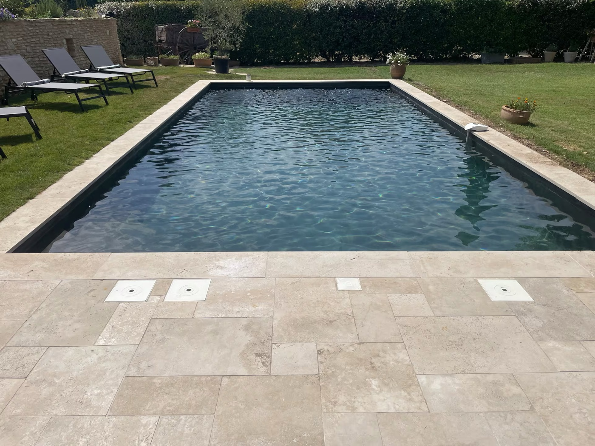
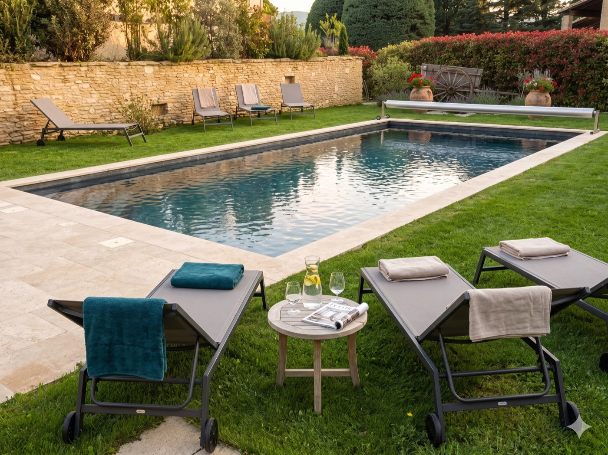
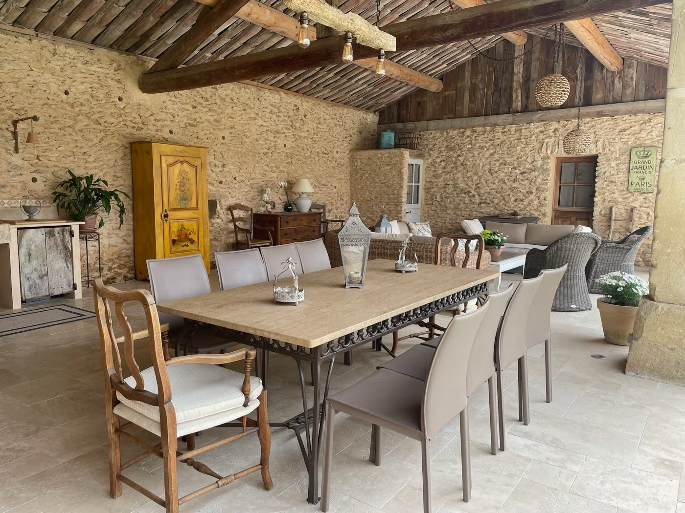
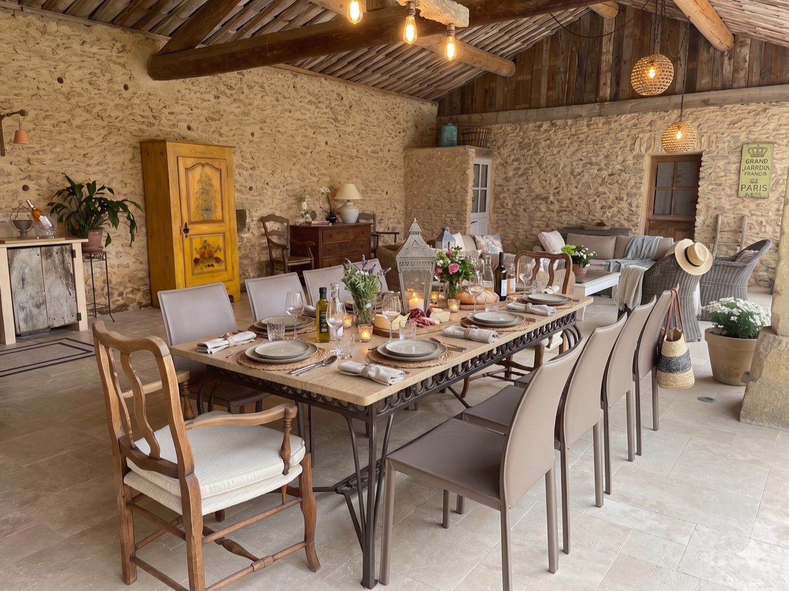
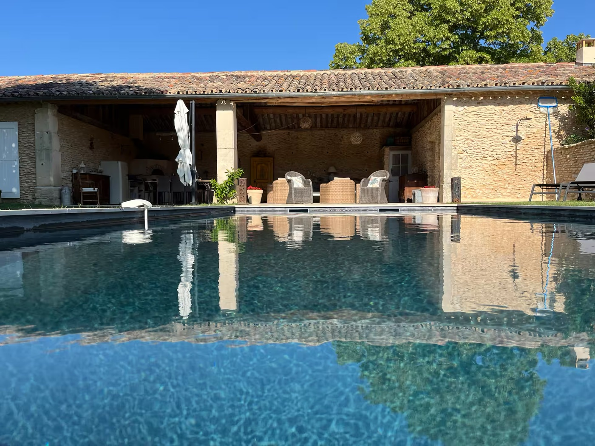
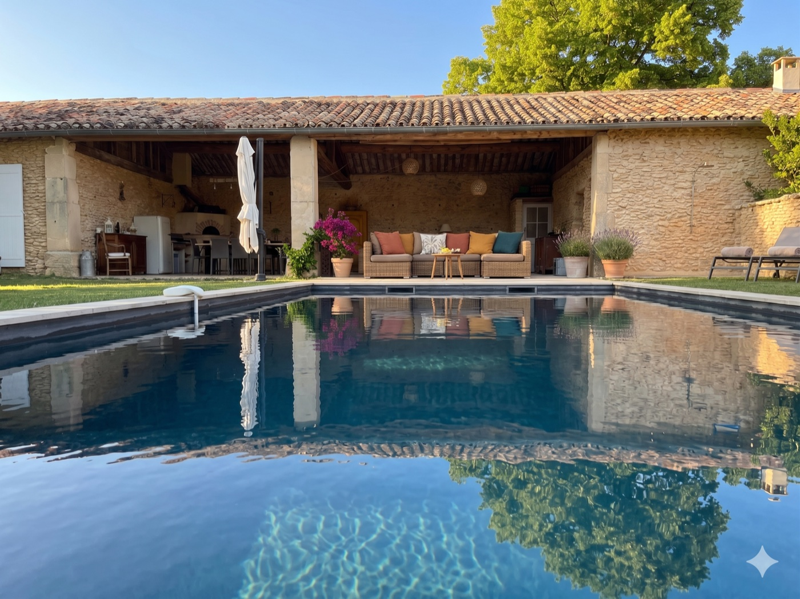
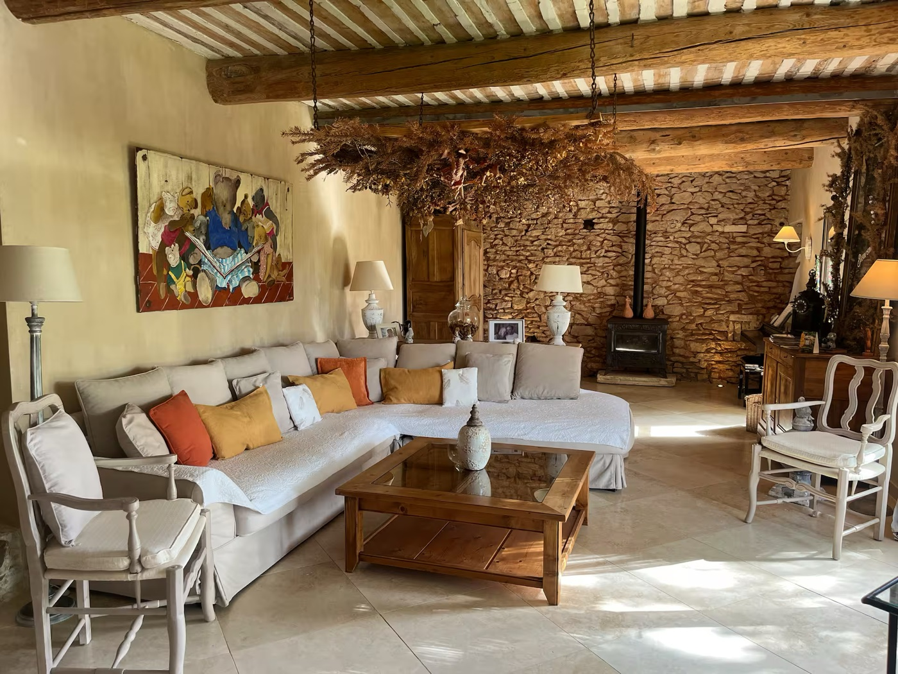
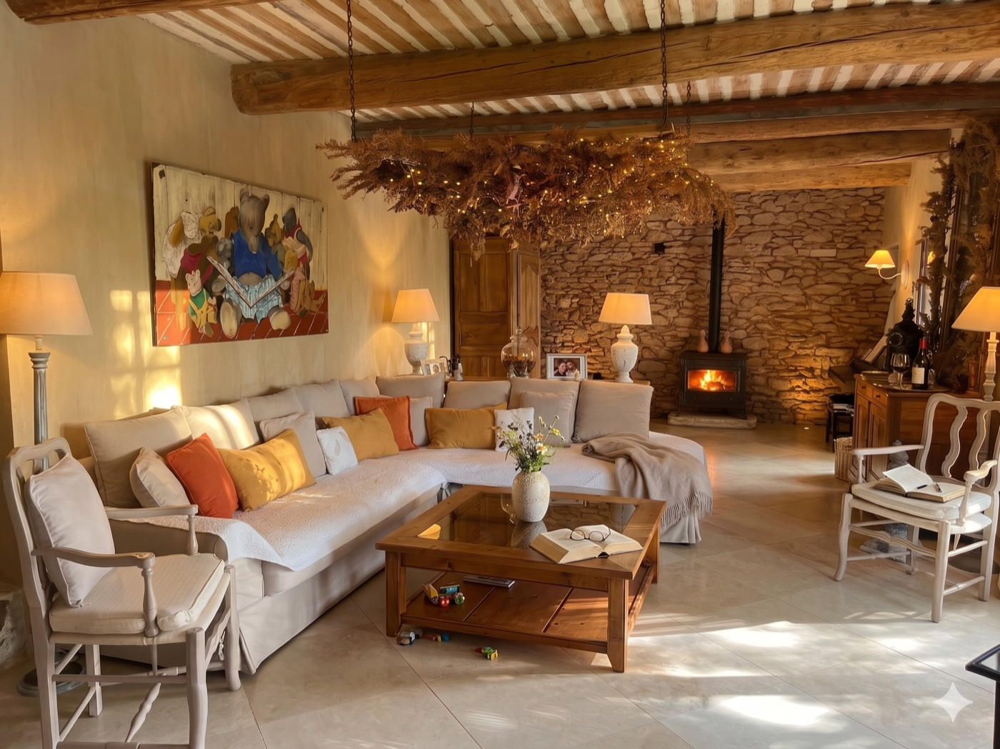
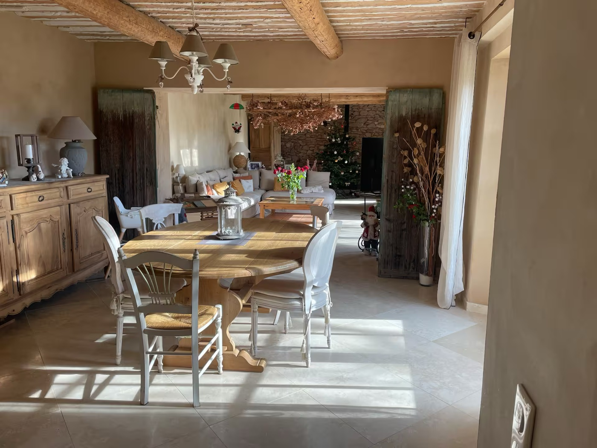
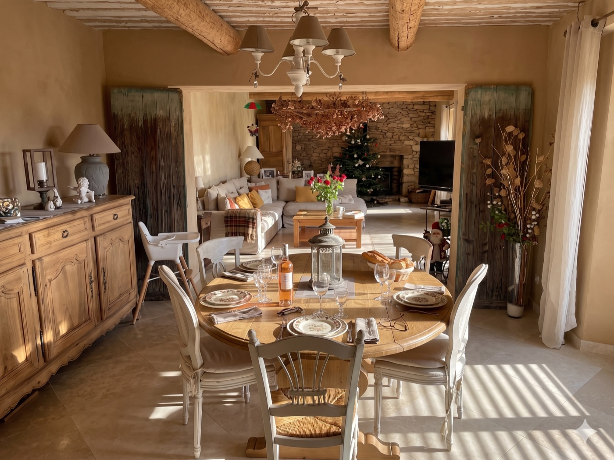

Un week-end chez ma mère, elle me dit qu'elle compte faire venir un pro pour refaire les photos de son Airbnb. Avant qu'elle ne décroche son téléphone, j'avais fait le test avec une IA. Voilà les cinq avant/après, et pourquoi ça change tout pour les propriétaires Airbnb et les agents immobiliers.
Je passe le week-end chez ma mère avec mon fils. Elle habite dans le Luberon, dans un mas en pierre qu'elle loue en Airbnb une partie de l'année. Café du samedi matin, on discute pendant qu'on prépare le petit-déjeuner.
Elle me dit qu'elle est sur le point de faire venir un photographe professionnel. Quelqu'un du village d'à côté, dans son réseau, qui fait ce métier depuis longtemps. Devis demandé, demi-journée chez elle, retouches comprises, dans les 500 euros. Elle voulait rafraîchir les photos en ligne, gagner quelques étoiles supplémentaires, attirer plus de réservations pour la saison. Plus qu'à fixer la date avec lui.
Je hoche la tête. Et là, je pense à Nano Banana.
Nano Banana, c'est le surnom qu'on donne à l'outil d'édition d'image de Google, intégré dans Gemini. Tu lui donnes une photo, tu lui parles, il modifie la photo. Pas par génération complète depuis zéro — il garde ce qui existe (les murs, le mobilier, la perspective) et il ajoute ou ajuste ce que tu lui demandes. Un peu comme si tu donnais une photo à un retoucheur qui aurait toute la patience du monde et qui ne te facturerait jamais à l'heure.
Je propose à ma mère, mi-blague mi-curieux : « Et si on essayait, avant que tu rappelles ton photographe ? Si ça donne quelque chose, tu auras le choix. Si c'est nul, tu fixes la date avec lui demain. » Elle me regarde comme si j'allais jouer avec un gadget pendant qu'elle continue à beurrer ses tartines.
Je récupère les photos brutes qu'elle avait sur son annonce Airbnb — celles qu'elle a prises elle-même au téléphone, qui sont en ligne actuellement. Et je vais voir Gemini.
J'ouvre Gemini sur mon ordinateur. Je téléverse la photo de la piscine — celle de l'annonce actuelle. Une photo correcte, prise un midi de juillet, lumière dure, les transats vides au fond, pas un seul accessoire, l'eau d'un beau bleu mais aucune ambiance.
Je tape juste ça :
« Améliore cette photo en lui donnant vie. »
Aucun prompt sophistiqué. Aucune indication précise. Je voulais voir ce que l'IA ferait toute seule, sans rien lui dire de plus.
Quinze secondes plus tard, je reçois ça.


La même piscine. Sauf que l'IA a ajouté deux transats au premier plan avec des serviettes pliées, une petite table avec une carafe d'eau, deux verres et un magazine, des fleurs sur le muret, et a basculé la lumière de midi en début de soirée doré.
J'ai eu un moment de flottement. L'IA n'a pas inventé une autre piscine. Elle a gardé la mienne : même forme, même eau, même mur en pierre derrière, même position des transats au fond. Elle a juste ajouté tout ce qui transforme une photo « OK » en photo où tu as envie d'être.
Je suis allé voir ma mère avec mon ordinateur. Elle a froncé les sourcils, puis elle a dit : « Mais c'est pareil ! Sauf que c'est mieux. »
Je me suis pris au jeu. Pendant qu'on terminait le petit-déjeuner, j'ai passé les autres photos de l'annonce dans Gemini, en gardant toujours la même consigne : « Améliore en lui donnant vie. » Parfois j'ai ajusté un peu (« mets l'apéritif sur la table », « ajoute des coussins colorés »), mais souvent l'IA trouvait toute seule.
Sa cuisine d'été — une cuisine extérieure abritée sous un appentis en pierre, avec une grande table en pierre, des chaises, un four à pain, une armoire jaune provençale en fond. Belle pièce. Photo nue, table vide, aucune ambiance.


Table dressée pour douze, sets en jute, verres à vin, bouquet de fleurs des champs, lanterne, baguette de pain, bouteille d'huile d'olive, bougies allumées. La table en pierre, l'armoire jaune, le mur en pierre, le canapé au fond : tout est resté identique.
La photo la plus emblématique de l'annonce : la maison vue de loin depuis la piscine, reflétée dans l'eau. Une photo qui montre l'architecture mais sans donner envie d'y vivre.


Salon de jardin avec coussins jaune-orange-terracotta sous l'auvent. Bougainvillier rose qui dépasse. Parasol crème. Transats avec serviettes à droite. Pot de lavandes. Lumière de fin de journée. Même maison, même piscine, même perspective — mais on a envie d'y passer la semaine.
Salon principal, canapé d'angle blanc, plante suspendue avec guirlande lumineuse, tableau d'art au mur, poêle à bois en fond. Joli mais éteint sur la photo.


Le feu est allumé dans le poêle. Un plaid jeté sur le canapé. Quelques jouets d'enfant au sol. Un bouquet sur la table basse. La pièce est vivante. Et la guirlande lumineuse de la plante suspendue brille vraiment, comme si on était un soir d'hiver.
Salle à manger intérieure ouverte sur le salon, table ronde en bois clair, chaises blanches, vue sur le sapin de Noël au fond (la photo avait été prise en décembre).


Table dressée pour six. Assiettes en porcelaine, verres à vin, bouquet de roses au centre, lanterne, bouteille de rosé en évidence, baguette posée sur un plateau. Le sapin de Noël en fond est resté, signe que l'IA a respecté la pièce telle qu'elle existait.
Dernière transformation, juste pour voir : la même piscine mais avec une consigne plus précise. « Ajoute des fleurs sur le muret, des transats au premier plan, et garde la lumière du milieu de l'après-midi. »
Résultat identique à la première, mais cette fois avec la lumière du midi conservée. Preuve que l'IA n'impose pas son style : si tu lui dis « garde la lumière », elle garde. Si tu ne dis rien, elle prend la plus flatteuse, c'est-à-dire la golden hour.
En enchaînant les essais, j'ai vu très vite ce que Nano Banana savait faire bien et ce qu'il évitait par lui-même. C'est intéressant parce que ça pose la frontière entre retouche utile et mensonge marketing.
L'IA n'a jamais touché à l'architecture, aux murs, aux poutres, à la piscine elle-même, aux meubles fixes. Elle a gardé fidèlement chaque élément structurel. La forme de la piscine est identique, les pierres du mur sont les mêmes pierres, le mobilier fixe (buffet, armoire, canapé) est resté à sa place.
Tout ce qui relève de l'habillage a changé : la table, les coussins, le linge de maison, les fleurs, les bougies, le feu dans la cheminée, la lumière de fin de journée. Ce sont exactement les choses qu'un photographe professionnel ajoute sur le terrain — sauf qu'au lieu de payer 500 euros et une demi-journée, ça t'a coûté trois minutes par photo.
Tant qu'on ajoute des éléments qui existent réellement chez l'hôte (transats qui sont rangés dans le cabanon, vaisselle qui est dans les placards, feu de cheminée d'une cheminée qui existe), c'est du home staging virtuel. C'est ce qu'un photographe ferait sur place. Si on commence à inventer une piscine quand il n'y en a pas, c'est de la tromperie envers le voyageur — et c'est non.
La cohérence entre les photos. L'IA reconnaît qu'il s'agit du même lieu d'une photo à l'autre. Quand j'ai retravaillé le salon intérieur après la salle à manger, elle a gardé le même style de décoration, les mêmes couleurs dominantes. Comme un photographe qui aurait un fil rouge dans toute sa série.
Sur certaines photos, l'IA a tendance à en faire trop. Trop de fleurs, trop de bougies, trop d'objets sur la table. Ça donne parfois un effet « catalogue ». Le contre-prompt qui marche : « Plus sobre. Garde l'essentiel. » Et tu obtiens une version plus crédible.
En sortant de cette expérience, je me suis dit qu'il y a clairement de la place pour un outil grand public. Quelqu'un va le faire. Voilà les deux idées les plus évidentes, telles que je les ai notées dans mon carnet.
Une application simple. Le propriétaire crée un compte, téléverse les photos brutes de son annonce. En quelques clics, il obtient les versions améliorées, prêtes à publier. Le système peut proposer plusieurs ambiances : « hiver chaleureux », « été méditerranéen », « famille avec enfants », « couple romantique ».
Modèle de prix qui marche : trois ou quatre euros par photo, ou un abonnement à 19 euros par mois pour un nombre illimité. Cible : les 600 000 hôtes Airbnb en France, dont la moitié n'a jamais payé de photographe professionnel.
L'agent visite le bien avec son iPhone, prend ses photos comme d'habitude. Il les téléverse dans l'outil, et en deux minutes il a les versions mises en valeur pour l'annonce : meubles ajoutés dans les pièces vides, lumière retravaillée, jardin avec coup de pouce printanier.
Cible : les 30 000 agences immobilières en France. Modèle : abonnement réseau à 79 euros par agent et par mois, ou paiement à la photo. Le ROI pour l'agent immobilier est évident : une annonce avec de belles photos se vend deux fois plus vite, et c'est exactement ce qu'il facture à son vendeur.
Ce qui rend ces deux idées accessibles à un non-développeur en 2026 : tu n'as plus besoin d'entraîner ton propre modèle. L'API de Gemini fait le travail pour quelques centimes par image. Tout l'enjeu, c'est le produit autour : l'interface, les prompts pré-réglés par cas d'usage, la gestion des comptes, la facturation. Une vraie application en quelques semaines avec Claude Code, si tu sais ce que tu veux.
Je ne le ferai pas. J'ai déjà des projets en cours et celui-ci ne me parle pas plus que ça. Mais je te le dis : il y a quelqu'un en France qui va prendre ce marché dans les 18 mois qui viennent. Autant que ce soit toi.
Quand je lui ai montré les cinq photos retouchées, ma mère a regardé son téléphone, puis la photo, puis son téléphone à nouveau. Elle n'a pas rappelé le photographe. Elle a publié mes versions sur son annonce le soir même.
Elle ne lui en veut pas, c'est un voisin qu'elle apprécie — elle le croise au marché du dimanche. Mais 500 euros qu'elle n'a pas à dépenser, c'est 500 euros gardés. Et le rendu est meilleur que ce qu'on aurait obtenu avec un shooting classique à midi en pleine lumière dure.
Coût total de mon expérience : une heure de mon temps un samedi matin, et zéro euro (j'ai utilisé Gemini en version gratuite, qui inclut un quota d'éditions d'image par jour largement suffisant pour ça).
Nano Banana est le surnom donné par les utilisateurs au modèle d'édition d'image de Google, intégré dans Gemini. Il permet de modifier une photo existante en gardant les éléments réels (architecture, mobilier, perspective) et en ajoutant des touches précises : changer la lumière, dresser une table, ajouter du mobilier, mettre des fleurs. Il s'utilise via une simple conversation avec l'IA.
Oui, et le résultat peut dépasser celui d'un photographe professionnel. À partir d'une photo brute prise au téléphone, une IA d'édition d'image comme Nano Banana peut ajouter du mobilier, dresser une table, allumer un feu de cheminée, retravailler la lumière, sans toucher au bâti réel. Coût : quelques minutes par photo, contre 300 à 800 euros pour un shooting professionnel.
Tout dépend de ce qu'on demande à l'IA. Tant qu'on garde le bâti réel et qu'on ajoute uniquement des éléments mobiles qui existent vraiment chez l'hôte (transats, table, vaisselle, feu de cheminée présent dans la maison), c'est du home staging virtuel acceptable — comme un photographe qui dresserait la table avant un shooting. Si on ajoute une piscine quand il n'y en a pas, c'est de la tromperie.
Entre 300 et 800 euros pour une demi-journée, selon la région et la notoriété du photographe. Le tarif couvre généralement 25 à 40 photos retouchées. À comparer avec quelques euros par photo via une IA, et environ une heure de travail pour une dizaine de photos.
Clairement oui. Deux pistes évidentes : (1) une application pour les propriétaires Airbnb qui uploadent leurs photos brutes et reçoivent des versions améliorées par IA, en quelques clics, pour quelques euros par photo ; (2) un outil pour les agents immobiliers qui prennent les photos au téléphone et récupèrent des versions mises en valeur. Les deux marchés représentent plusieurs millions d'utilisateurs potentiels en France.
Le plus surprenant : un simple « améliore cette photo en lui donnant vie » donne déjà 80 % du résultat. L'IA comprend qu'il faut dresser la table, allumer la cheminée, mettre des coussins, ajouter des fleurs, retravailler la lumière. On peut ensuite affiner : « ajoute deux verres de vin et un magazine sur la petite table », « mets une lumière de fin d'après-midi », « ajoute des transats au premier plan ».
Chaque semaine, je publie ma veille IA dans une newsletter. J'y partage ce que je teste, ce qui marche, ce qui foire, et les outils que je découvre. Gratuit, sans pub, désinscription en un clic.
Voir la newsletter →